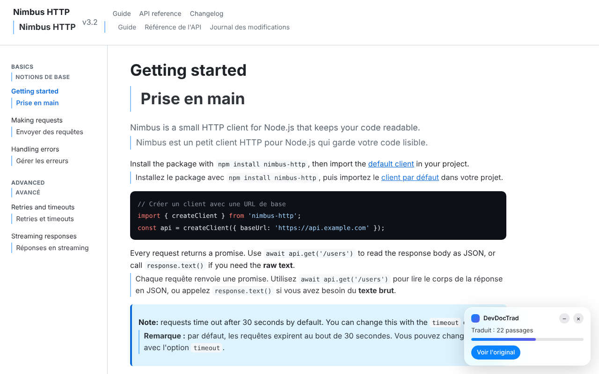

Verný preklad
Vetu po vete, v rovnakom poradí, bez zhrnutí, vynechaní a doplnkov. Rozšírenie prekladá, nevysvetľuje.
Novinka vo verzii 1.2: dabing videí na akomkoľvek webe
Verne prekladá technickú dokumentáciu a weby pre programátorov do tvojho jazyka bez toho, aby sa dotklo kódu.

Pre všetkých, ktorí zápasia s dokumentáciou v cudzom jazyku: oficiálna dokumentácia, README a issues na GitHube, Stack Overflow, fóra, technické blogy, prednášky z konferencií.
Vetu po vete, v rovnakom poradí, bez zhrnutí, vynechaní a doplnkov. Rozšírenie prekladá, nevysvetľuje.
Príkazy, funkcie, API, cesty a URL sa nikdy neprekladajú. Odkazy, tučné písmo a bloky kódu zostávajú na mieste.
Predvolene jazyk prehliadača, z 37 jazykov. Ruský vývojár dostane ruštinu, japonský japončinu.
Návody a prednášky: titulky sa prekladajú naživo priamo vo videu, aj na YouTube. Bez titulkov? Hlas sa zadarmo prepíše (Groq Whisper). Voliteľné predčítanie. Dabing: preklad číta hlas prehliadača.
Bezplatné úrovne Gemini, Groq, Mistral, OpenRouter alebo lokálne Ollama. Platený kľúč zostáva zablokovaný, kým nenastavíš limit.
Nahradí text alebo ukáže preklad pod každou vetou. Jedno kliknutie alebo Alt+Shift+T späť k presnému originálu.
Žiadne štatistiky, žiadne sledovanie. Kľúče zostávajú v prehliadači. Citlivé stránky sa nikdy neprekladajú automaticky.
Kúsok dokumentácie v angličtine. Prepni režim: text prejde do tvojho jazyka, kód zostane bez zmeny.
Call readFile() to load the file, then JSON.parse() to turn it into an object.Zavolaj readFile() na načítanie súboru a potom JSON.parse(), aby si z neho urobil objekt.
import { readFile } from "node:fs/promises";
const text = await readFile("config.json", "utf8");
const config = JSON.parse(text);All options in the API referenceVšetky voľby v referencii API
Blok kódu, názvy funkcií aj odkaz sú vo všetkých troch režimoch rovnaké.
Prednáška v angličtine: preklad sa objavuje naživo v obraze, pod pôvodnou vetou. Tu ide o simuláciu.
npm install lru-cache.Najprv nainštaluj knižnicu príkazom npm install lru-cache.fetch() with cachedFetch().Potom nahraď každé volanie fetch() volaním cachedFetch().


Firefox: jedným kliknutím z addons.mozilla.org. Chrome, Edge a Brave: ručne niekoľkými kliknutiami, do zverejnenia v obchodoch.
chrome://extensions (alebo edge://extensions, brave://extensions).Nainštalovať z addons.mozilla.org
Firefox 140 alebo novší. Aktualizácie prichádzajú samy.
about:debugging#/runtime/this-firefox.:free), alebo nainštaluj Ollama. Na hlas vo videách bez titulkov použi Groq.Áno. Rozšírenie je zadarmo a open source. Používa tvoje vlastné kľúče na bezplatných úrovniach poskytovateľov alebo Ollama na tvojom počítači. Nikdy neprejde na platený kľúč a platený kľúč zostane zablokovaný, kým sám nenastavíš denný limit.
Vstavaný preklad prekladá aj názvy funkcií, príkazy a niekedy aj kód a často pokazí rozloženie. DevDocTrad rozpozná kód, identifikátory a URL a nikdy sa ich nedotkne, zachová odkazy a formátovanie a vie ukázať originál vedľa prekladu.
Zapni vo vyskakovacom okne „Prekladať hlas vo videách“ alebo stlač Alt+Shift+V. Ak má video titulky (YouTube, prednášky, kurzy), preložia sa a zobrazia v obraze. Inak sa zvuk rozdelí na niekoľkosekundové úseky, prepíše ho Groq Whisper s tvojím bezplatným kľúčom Groq a potom sa preloží. Tlačidlo reproduktora predčíta preklad hlasom prehliadača. Nič sa neplatí. Pre dabing zvoľ „Titulky + preložený hlas (dabing)“: hlas prehliadača číta preklad v rytme videa.
Ukladajú sa len do lokálneho úložiska prehliadača, nikdy sa nesynchronizujú a posielajú sa len príslušnému poskytovateľovi. Nikdy sa neobjavia v URL, zázname ani v správe pre stránku.
Len k poskytovateľovi, ktorého si vybral, alebo nikam s Ollama. Na bezplatných úrovniach môžu Google a Mistral text opätovne použiť: pre súkromné stránky radšej Ollama. Pri hlase idú do Groq len krátke úseky zvuku.
37 cieľových jazykov vrátane slovenčiny, angličtiny, francúzštiny, španielčiny, nemčiny, ruštiny, čínštiny, japončiny a arabčiny. Stránky môžu byť v akomkoľvek jazyku. Rozhranie rozšírenia existuje v 36 jazykoch (arabčina, hebrejčina a perzština sprava doľava) a riadi sa prehliadačom. Tento web je tiež v 37 jazykoch.
Áno, licencia MIT: môžeš ho použiť, upraviť a šíriť, ak zachováš upozornenie na licenciu.